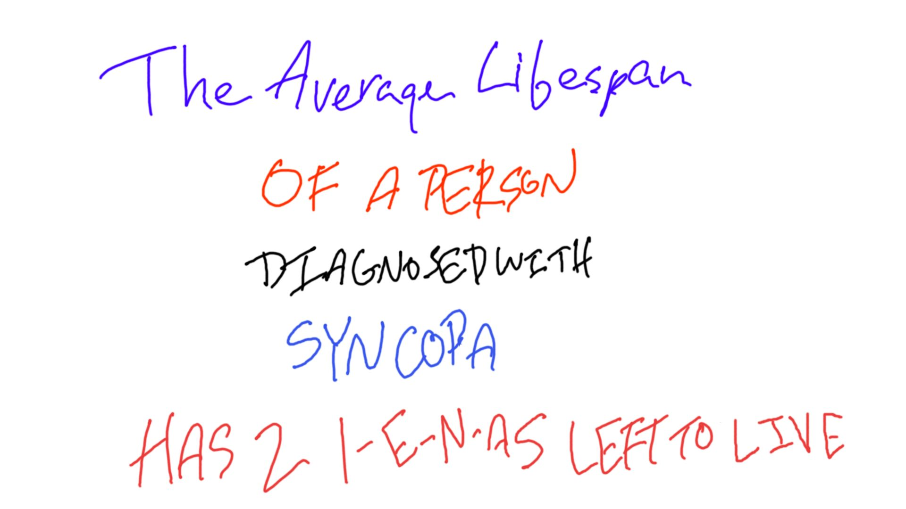

Dedicated to ending and educating about syncopa since 1994
This organization and website, as of February 2005, is defunct due to lack of membership and patronage.
Syncopa awareness event at Times Square, NYC from 5-9 EST.
August 7, 2004Syncopa Fundraiser at Millenium Park, Chicago from 1-7 CST.
©1998-2005, North American Syncopa Awareness Society